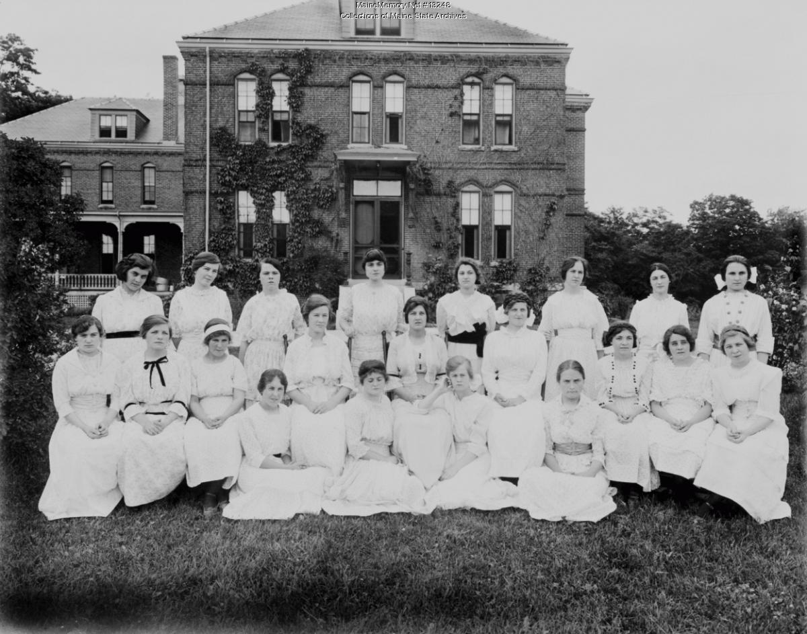
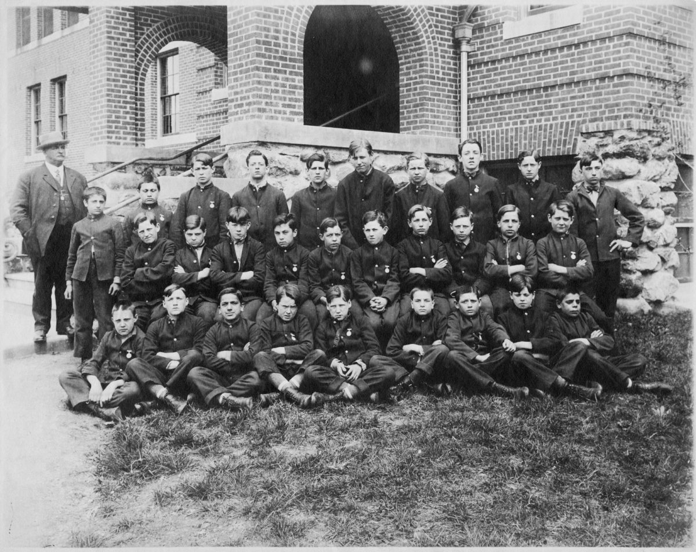
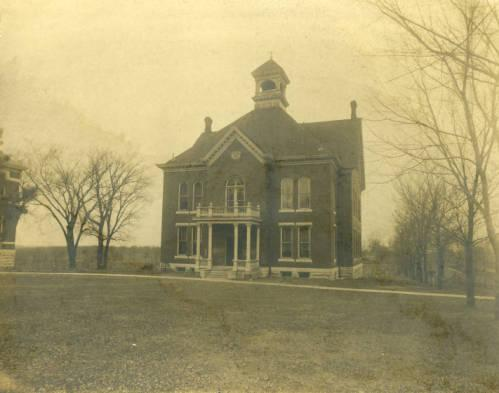
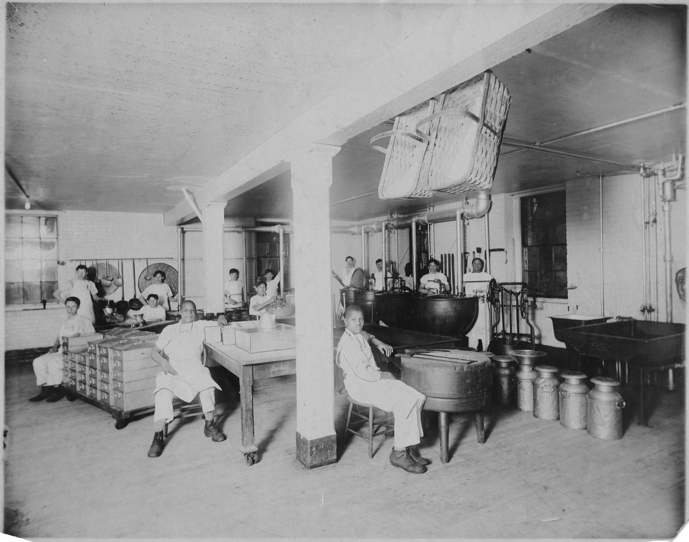

Mortality in America’s historical reformatories and industrial schools
Across Top: House of Reformation and Instruction for Colored Children, State School for Girls, House of Reformation and Instruction for Colored Children Across Bottom: Negro Boys Industrial School, Lyman School for Boys, State Industrial Home for Girls, Lyman School for Boys